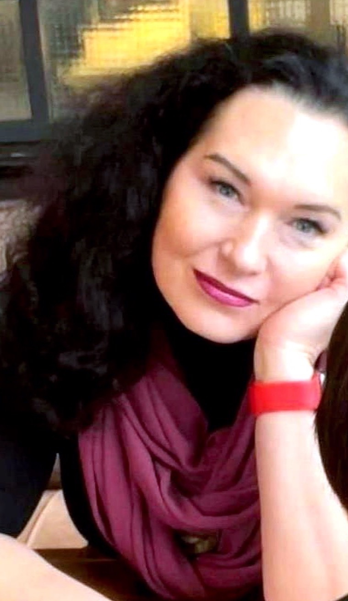

Внутрішній стан
Тривога, депресія та інші труднощі внутрішнього життя. Розбираємося, що стоїть за станом, і шукаємо, на що можна покладатися.
Сертифікована психотерапевтка у методі Позитивної психотерапії · Магістр психології
Допомагаю подивитися на те, що відбувається у вашому житті, під іншим ракурсом: переосмислити події, знайти власні ресурси та неочевидні рішення.

Я Юлія Жаркова — Магістр психології та сертифікована психотерапевтка у методі Позитивної психотерапії (Certificate No. UKR-597-2025). Живу й працюю в Києві понад 20 років.
Я закінчила Майстер-курс Українського Інституту Позитивної психотерапії та є дійсною членкинею Всесвітньої Асоціації Позитивної психотерапії (WAPP). У роботі спираюся на принципи методу, поважаю індивідуальність людини та вірю, що внутрішні ресурси для змін можна знайти й у складних обставинах.
Працюю з підлітками й дорослими, з повагою ставлюся до різноманіття сексуальних орієнтацій та гендерних ідентичностей. Поважаю досвід кожної людини незалежно від її життєвих обставин, соціального становища, особливостей чи переконань.
Психотерапія для мене — спільний пошук розуміння того, що відбувається, чому ситуації повторюються та як змінити звичні способи реагування. Допомагаю побачити зв’язок минулого досвіду з теперішніми труднощами, краще зрозуміти почуття й потреби та знайти нові способи розв’язання проблем.
Не оцінюю й не нав’язую готових рішень. Разом ми створимо простір, де можна відкрито говорити про важливе, бути почутими та поступово знаходити відповіді. Регулярно проходжу супервізії й дотримуюся професійних етичних принципів.
1993–2001
Інженер-енергетик (1993–1999) і бухгалтер-економіст (1999–2001), ДДТУ.
2021
Магістр психології, Міжрегіональна Академія управління персоналом (МАУП).
2021–2022
Базовий курс Позитивної психотерапії (200+ годин), сертифікат № UKR.191-2023, Український інститут Позитивної психотерапії.
2021–2025
Майстер-курс з Позитивної психотерапії (810 годин): World Association for Positive and Transcultural Psychotherapy та Український інститут Позитивної психотерапії. Керуючий тренер — Людмила Москаленко, канд. психол. наук.
2024–2025
Курс «Пропедевтика психіатрії» (160 годин), Львівський психоаналітичний інститут ментального здоров’я.
Також
«Позитивна сімейна психотерапія», майстер-тренер Н. Босовська.
Мови: українська й російська — вільно, англійська — A2.
Натисніть на документ, щоб розглянути його ближче.
Працюю із запитами, пов’язаними з тривогою, депресією, кризою сенсів та іншими труднощами. Нижче — основні напрями.
Тривога, депресія та інші труднощі внутрішнього життя. Розбираємося, що стоїть за станом, і шукаємо, на що можна покладатися.
Криза сенсів і відчуття, що звичні опори більше не працюють. Разом переосмислюємо події та знаходимо власні ресурси.
Труднощі в родині та у стосунках. Працюю індивідуально й з парами.
Труднощі на роботі та в соціальному оточенні. Допомагаю подивитися на ситуацію з іншого боку.
Метод Позитивної психотерапії, заснований Н. Пезешкіаном, спирається на те, що в людині вже є, і розглядає життя в чотирьох сферах — тіло, діяльність, контакти та сенси.
Моя робота — це розмова, у якій ми разом складаємо запитання, що допомагають побачити ваше життя під іншим кутом.
Індивідуальні консультації (60 хв) та робота з парами (90 хв): онлайн або особисто в кабінеті в центрі Києва.
Кількість і періодичність сесій узгоджуються індивідуально — відповідно до запиту, потреб і цілей.
Українська або російська.
Інформована згода: правила, за якими ми працюємо. Прочитайте їх перед першою сесією — так спокійніше обом, бо зрозуміло, чого очікувати.
Контракт набирає чинності після ознайомлення та усної згоди клієнта.
Напишіть мені у Telegram або скористайтеся будь-яким зручним способом зв’язку.